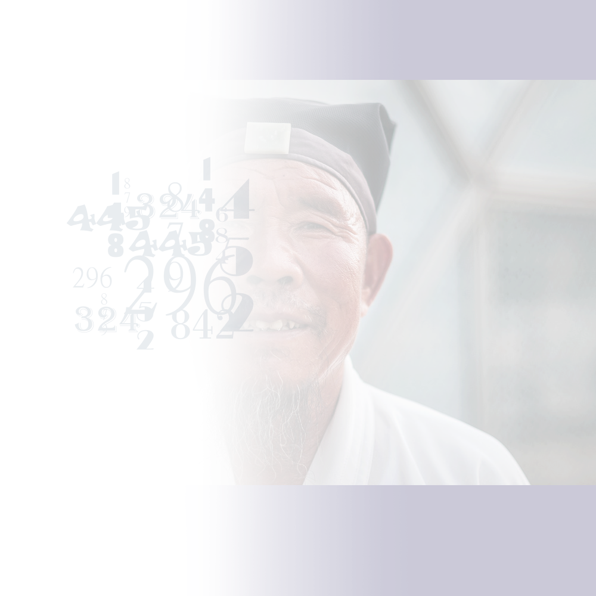

A Social Numbers Game - XBT
Issue 30 5.21.19
A Social Numbers Game
Written by XBT team: Nhi Tran, Anthony Bui, Jecky Xiong
In an ideal world everyone is contributing to their society, crimes are low or non-extent, and everyone is happy with what they are given and have. This Utopia is what a government should be aiming for, and also provide the necessary tools for this dream. A quote from Robert V. Hine in California’s Utopian Colonies ,“A group of people who are attempting to establish a new social pattern based upon a vision of the ideal society and who have withdrawn themselves from the community at large to embody that vision in experimental form." Researching this topic has lead us to many conclusions and theories on how social score works, China’s concept of social score, and how it would potentially be applied to our society in United States.
The people play a big role on how far the government can go with monitoring and controlling their citizens. Overview of China’s bank gave us information on how well China’s economy is doing and why people in China might believe they are doing better with their new government. “GDP growth has averaged nearly 10% a year—the fastest sustained expansion by a major economy in history—and more than 850 million people have lifted themselves out of poverty.”1 People in China believe that the government is doing great and questioning the flaws would cause others to shun the people. The punishment for having a lower social score in China is devastating and unfair and it affects a numerous amount of people. ”In China, your social credit score determines everything from how much interest you pay on a loan to how easily you can rent a car or get a visa to travel overseas.”2
Government surveillance in the United States have already became a thing, but the government have not released or plan to use the information they gain for public use or make public. Credit score and social scores are comparable in many ways and no system of monitoring comes without flaws. “More than one in five consumers have a ‘potentially material error’ in their credit file that makes them look riskier than they are.”3 The government of China hasn’t released a lot of info on who is monitoring their scores and how exactly they obtain certain information necessary to determine a person’s social score but it error in this system could ruin a person’s life and complaining or revoking a bad score might result in punishment. It also seems that China obtain a face recognition camera that is able to capture criminals. Their advancement in A.I./technology seems to help advance their agenda on perfecting the social score concept. “With millions of cameras and billions of lines of code, China is building a high-tech authoritarian future. Beijing is embracing technologies like facial recognition and artificial intelligence to identify and track 1.4 billion people. It wants to assemble a vast and unprecedented national surveillance system, with crucial help from its thriving technology industry.”4 Scoring an individual on their worth is something that seems impossible as there are minor ways to monitor everyone. But somehow China established a somewhat working social scoring system. There are obvious flaws in this scoring system as it seems to only punish low scoring individuals and not reward high scoring ones. China has taken advantage of their technology to monitor and control their citizens. This is shows how technology can be used against the people. In this article we go through how China’s social score system works, how it happened, and what a social score system would look like in America.
In 2006, China started using a common credit score system from the central People’s Bank of China with the same scale as the US, of 300 being very poor to 850 being excellent. Inspired by the west’s use of credit score, the Chinese government thought that a credit score could be expanded to more than just finance. As a result, in 2007, China began with the Social Credit Score prototype. Lin Junyue, a chief engineer and researcher of this system in Beijing said “We wanted to explore credit in the broadest possible sense by gathering a far greater amount of information, for instance from the ministry of state security or ministry of industry and information technology. That project was ratified by the national development and reform commission in 2012.”5 By 2020, the system will be tested in 43 cities across China with different names and evaluation criteria. The system will be based mostly on data from social networks, apps in smartphones, and video surveillance. In 2020, most Chinese urban public space will have cameras installed with facial recognition under the Skynet system. Moreover, in many rural areas, people are able to observe the cameras from the village entrance through smartphones or television from the Sharp Eyes project 5.

The United States has been tracking people for a long time, it is not emphasized enough to the point that Americans will notice it that much. Consumers and citizens of America are already being tracked. We are being tracked by what we buy and what sites we visit. This is how the “recommended” things appear, because it relates back to what we viewed. “Right now, data collection companies’ main goal is selling you things. But it isn’t hard to envision how a few changes in the market could produce something like our Chinese friends’ Big Brother experience.”6 Data analyzers can actually take our information and can build a profile of what we are interested into, however, let’s say that we’ve moved a few years later and the social score economy has been adapted to the United States. This means that, exactly like China, those who have a high social score would basically benefit extremely while those who do not would almost have no access to anything. This means that even if someone is not a criminal, but they have a low credit score, they are basically rejected from the use of anything. The worst part is that it is easy to bring down your social credit score. “It’s actually really easy to watch your SCS drop. Hang out with someone with a low score, and your own will go down. You can lose points based on spending time with your family and friends.”7
People in the United States can still try to change how the social score economy works, or maybe get rid of it entirely. The United States needs to address data privacy and the power that data aggregation companies have over individuals. Based on what China is experiencing as of right now, many people in America would probably reject this whole system outright. But has the US already adopted a similar system? At this time, the system that China has, conceivably helps with crime and security, but does not help those who were born into scenarios that would put them at the lower parts of the social credit society. Do the costs of this system outweigh the benefits? People might question, why would anyone want a system like this? In terms of the government in China, the usage of a system like the social score system, allows China to govern its people almost completely. With how China is a Communist country, China has every right to take out those who are against their rules, meaning that the Chinese government has almost complete control over their people.
The extent that these scores can be life ruining is unethical. Being unable to move forward in life due to a bad score or being restricted from traveling to a new place to restart or find a job seems to make it impossible to climb back up from mistakes or accidents. Most of the benefits from social scores are for loyal and law- abiding citizens. There are some rules that would affect you without you knowing. “Authorities have experimented with ‘social credit’ since 2014 in areas across China. Points are deducted for breaking the law or, in some areas, offenses as minor as walking a dog without a leash.”8 America and other countries have a score that impacts your life but our credit score system is somewhat recoverable if you are in below the average score. The social score system seems to be built on only punishing offenders and not rewarding good deeds. The concept needs to be greatly revised with consumer protections or be scrapped in all.
References
1 “Overview,” World Bank. Updated April 8, 2019, www.worldbank.org/en/country/china/overview.
2 Anthony Davenport, “America Isn't Far Off From China's 'Social Credit Score',” Observer,
Observer, 22 Feb. 2018, observer.com/2018/02/america-isnt-far-off-from-chinas-social-credit-score/.
3 Aaron Klein, “The Real Problem with Credit Reports Is the Astounding Number of Errors,”
CNBC, CNBC, 27 Sept. 2017, www.cnbc.com/2017/09/27/the-real-problem-with-credit-reports-is-the-astounding-number-of-errors-equifax-commentary.html.
4 Paul Mozur, “Inside China's Dystopian Dreams: A.I., Shame and Lots of Cameras,” The New
York Times, The New York Times, 8 July 2018, https://www.nytimes.com/2018/07/08/business/china-surveillance-technology.html?searchResultPosition=1
5 Raphael, René, and Ling Xi, "Discipline and Punish: The Birth of China's Social-Credit System," The Nation, January 23, 2019, Accessed March 27, 2019, https://www.thenation.com/article/china-social-credit-system/.
6 Davenport, “America Isn't Far Off”
7 “China’s Social Credit System – It’s Coming to the United States,” Katusa Research, March 1,
2019, Accessed April 15, 2019, https://katusaresearch.com/chinas-social-credit-system-coming-to-united-states/
8 Joe Mcdonald, “China Bars Millions from Travel for 'Social Credit' Offenses,” AP NEWS,
Associated Press, 23 Feb. 2019, www.apnews.com/9d43f4b74260411797043ddd391c13d8.